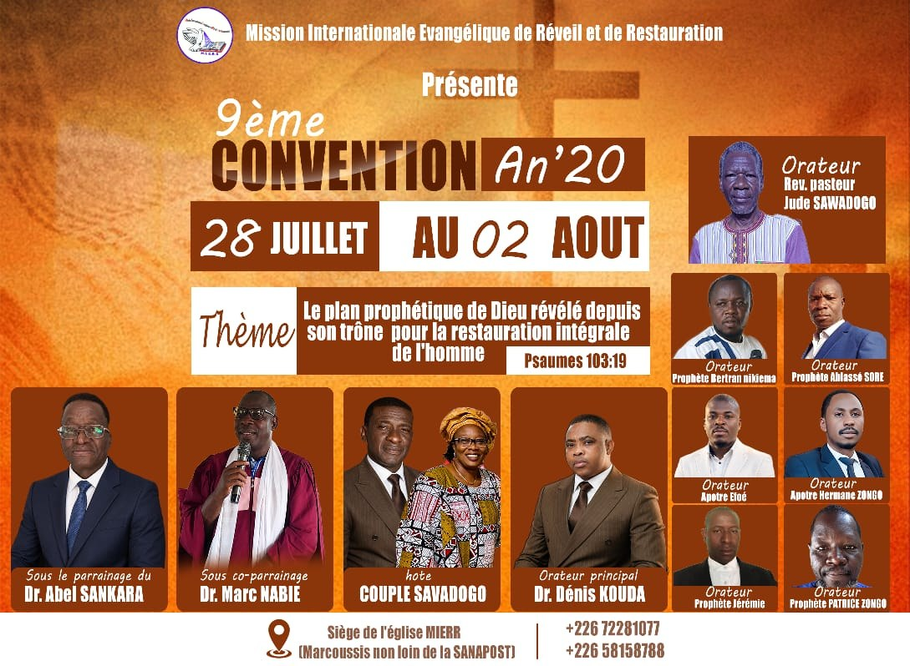

Convention
9ème Convention de la MIERR — An'20
Thème : « Le plan prophétique de Dieu révélé depuis son trône pour la restauration intégrale de l'homme » — Psaumes 103:19.
Sous le parrainage du Dr Abel SANKARA, le co-parrainage du Dr Marc NABIE, avec pour hôte le Couple SAVADOGO et pour orateur principal le Dr Dénis KOUDA. Prédications également assurées par le Rév. Pasteur Jude SAWADOGO et plusieurs prophètes et apôtres invités.